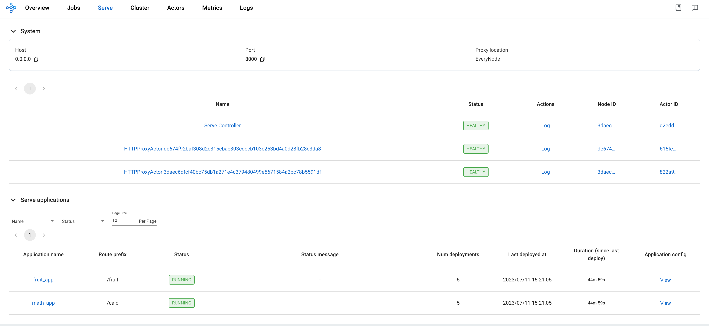

Ray Services (alpha)¶
Note: This is the alpha version of Ray Services. There will be ongoing improvements for Ray Services in the future releases.
Prerequisites¶
This guide focuses solely on the Ray Serve multi-application API, which is available starting from Ray version 2.4.0.
- Ray 2.4.0 or newer.
- KubeRay 0.6.0, KubeRay nightly, or newer.
What is a RayService?¶
A RayService manages 2 things:
- RayCluster: Manages resources in a Kubernetes cluster.
- Ray Serve Applications: Manages users' applications.
What does the RayService provide?¶
- Kubernetes-native support for Ray clusters and Ray Serve applications: After using a Kubernetes config to define a Ray cluster and its Ray Serve applications, you can use
kubectlto create the cluster and its applications. - In-place update for Ray Serve applications: Users can update the Ray Serve config in the RayService CR config and use
kubectl applyto update the applications. See Step 7 for more details. - Zero downtime upgrade for Ray clusters: Users can update the Ray cluster config in the RayService CR config and use
kubectl applyto update the cluster. RayService will temporarily create a pending cluster and wait for it to be ready, then switch traffic to the new cluster and terminate the old one. See Step 8 for more details. - Services HA: RayService will monitor the Ray cluster and Serve deployments' health statuses. If RayService detects an unhealthy status for a period of time, RayService will try to create a new Ray cluster and switch traffic to the new cluster when it is ready.
Example: Serve two simple Ray Serve applications using RayService¶
Step 1: Create a Kubernetes cluster with Kind¶
kind create cluster --image=kindest/node:v1.23.0
Step 2: Install the KubeRay operator¶
Follow this document to install the latest stable KubeRay operator via Helm repository.
Please note that the YAML file in this example uses serveConfigV2 to specify a multi-application Serve config, which is supported starting from KubeRay v0.6.0.
Step 3: Install a RayService¶
# path: ray-operator/config/samples/
kubectl apply -f ray_v1alpha1_rayservice.yaml
- Let's first take a look at the Ray Serve config (i.e.
serveConfigV2) embedded in the RayService YAML. At a high level, there are two applications: a fruit stand app and a calculator app. Some details about the fruit stand application: - The fruit stand application is contained in the
deployment_graphvariable infruit.pyin the test_dag repo, soimport_pathin the config points to this variable to tell Serve from where to import the application. - It is hosted at the route prefix
/fruit, meaning HTTP requests with routes that start with the prefix/fruitwill be sent to the fruit stand application. - The working directory points to the test_dag repo, which will be downloaded at runtime, and your application will be started in this directory. See the Runtime Environment Documentation for more details.
- For more details on configuring Ray Serve deployments, see the Ray Serve Documentation.
- Similarly, the calculator app is imported from the
conditional_dag.pyfile in the same repo, and it's hosted at the route prefix/calc.serveConfigV2: | applications: - name: fruit_app import_path: fruit.deployment_graph route_prefix: /fruit runtime_env: working_dir: "https://github.com/ray-project/test_dag/archive/41d09119cbdf8450599f993f51318e9e27c59098.zip" deployments: ... - name: math_app import_path: conditional_dag.serve_dag route_prefix: /calc runtime_env: working_dir: "https://github.com/ray-project/test_dag/archive/41d09119cbdf8450599f993f51318e9e27c59098.zip" deployments: ...
Step 4: Verify the Kubernetes cluster status¶
# Step 4.1: List all RayService custom resources in the `default` namespace.
kubectl get rayservice
# [Example output]
# NAME AGE
# rayservice-sample 2m42s
# Step 4.2: List all RayCluster custom resources in the `default` namespace.
kubectl get raycluster
# [Example output]
# NAME DESIRED WORKERS AVAILABLE WORKERS STATUS AGE
# rayservice-sample-raycluster-6mj28 1 1 ready 2m27s
# Step 4.3: List all Ray Pods in the `default` namespace.
kubectl get pods -l=ray.io/is-ray-node=yes
# [Example output]
# ervice-sample-raycluster-6mj28-worker-small-group-kg4v5 1/1 Running 0 3m52s
# rayservice-sample-raycluster-6mj28-head-x77h4 1/1 Running 0 3m52s
# Step 4.4: List services in the `default` namespace.
kubectl get services
# NAME TYPE CLUSTER-IP EXTERNAL-IP PORT(S) AGE
# ...
# rayservice-sample-head-svc ClusterIP 10.96.34.90 <none> 10001/TCP,8265/TCP,52365/TCP,6379/TCP,8080/TCP,8000/TCP 4m58s
# rayservice-sample-raycluster-6mj28-head-svc ClusterIP 10.96.171.184 <none> 10001/TCP,8265/TCP,52365/TCP,6379/TCP,8080/TCP,8000/TCP 6m21s
# rayservice-sample-serve-svc ClusterIP 10.96.161.84 <none> 8000/TCP 4m58s
KubeRay will create a RayCluster based on spec.rayClusterConfig defined in the RayService YAML for a RayService custom resource.
Next, after the head Pod is running and ready, KubeRay will submit a request to the head's dashboard agent port (default: 52365) to create the Ray Serve applications defined in spec.serveConfigV2.
After the Ray Serve applications are healthy and ready, KubeRay will create a head service and a serve service for the RayService custom resource (e.g., rayservice-sample-head-svc and rayservice-sample-serve-svc in Step 4.4).
Users can access the head Pod through both the head service managed by RayService (i.e. rayservice-sample-head-svc) and the head service managed by RayCluster (i.e. rayservice-sample-raycluster-6mj28-head-svc).
However, during a zero downtime upgrade, a new RayCluster will be created, and a new head service will be created for the new RayCluster.
If rayservice-sample-head-svc is not used, users will need to update their ingress configuration to point to the new head service.
However, if rayservice-sample-head-svc is used, KubeRay will automatically update the selector to point to the new head Pod, eliminating the need for users to update their ingress configuration.
Note: Default ports and their definitions.
| Port | Definition |
|---|---|
| 6379 | Ray GCS |
| 8265 | Ray Dashboard |
| 10001 | Ray Client |
| 8000 | Ray Serve |
| 52365 | Ray Dashboard Agent |
Step 5: Verify the status of the Serve applications¶
# Step 5.1: Check the status of the RayService.
kubectl describe rayservices rayservice-sample
# Active Service Status:
# Application Statuses:
# fruit_app:
# Health Last Update Time: 2023-07-11T22:21:24Z
# Last Update Time: 2023-07-11T22:21:24Z
# Serve Deployment Statuses:
# fruit_app_DAGDriver:
# Health Last Update Time: 2023-07-11T22:21:24Z
# Last Update Time: 2023-07-11T22:21:24Z
# Status: HEALTHY
# fruit_app_FruitMarket:
# ...
# Status: RUNNING
# math_app:
# Health Last Update Time: 2023-07-11T22:21:24Z
# Last Update Time: 2023-07-11T22:21:24Z
# Serve Deployment Statuses:
# math_app_Adder:
# Health Last Update Time: 2023-07-11T22:21:24Z
# Last Update Time: 2023-07-11T22:21:24Z
# Status: HEALTHY
# math_app_DAGDriver:
# ...
# Status: RUNNING
# Step 5.2: Check the Serve applications in the Ray dashboard.
# (1) Forward the dashboard port to localhost.
# (2) Check the Serve page in the Ray dashboard at http://localhost:8265/#/serve.
kubectl port-forward svc/rayservice-sample-head-svc --address 0.0.0.0 8265:8265
- Refer to rayservice-troubleshooting.md for more details on RayService observability. Below is a screenshot example of the Serve page in the Ray dashboard. 
Step 6: Send requests to the Serve applications via the Kubernetes serve service¶
# Step 6.1: Run a curl Pod.
# If you already have a curl Pod, you can use `kubectl exec -it <curl-pod> -- sh` to access the Pod.
kubectl run curl --image=radial/busyboxplus:curl -i --tty
# Step 6.2: Send a request to the fruit stand app.
curl -X POST -H 'Content-Type: application/json' rayservice-sample-serve-svc:8000/fruit/ -d '["MANGO", 2]'
# [Expected output]: 6
# Step 6.3: Send a request to the calculator app.
curl -X POST -H 'Content-Type: application/json' rayservice-sample-serve-svc:8000/calc/ -d '["MUL", 3]'
# [Expected output]: "15 pizzas please!"
rayservice-sample-serve-svcis HA in general. It will do traffic routing among all the workers which have Serve deployments and will always try to point to the healthy cluster, even during upgrading or failing cases.
Step 7: In-place update for Ray Serve applications¶
You can update the configurations for the applications by modifying serveConfigV2 in the RayService config file. Re-applying the modified config with kubectl apply will re-apply the new configurations to the existing RayCluster instead of creating a new RayCluster.
Let's try it out. Update the price of mangos from 3 to 4 for the fruit stand app in ray_v1alpha1_rayservice.yaml. This will reconfigure the existing MangoStand deployment, and future requests will use the updated Mango price.
# Step 7.1: Update the price of mangos from 3 to 4.
# [ray_v1alpha1_rayservice.yaml]
# - name: MangoStand
# num_replicas: 1
# user_config:
# price: 4
# Step 7.2: Apply the updated RayService config.
kubectl apply -f ray_v1alpha1_rayservice.yaml
# Step 7.3: Check the status of the RayService.
kubectl describe rayservices rayservice-sample
# [Example output]
# Serve Deployment Statuses:
# - healthLastUpdateTime: "2023-07-11T23:50:13Z"
# lastUpdateTime: "2023-07-11T23:50:13Z"
# name: MangoStand
# status: UPDATING
# Step 7.4: Send a request to the fruit stand app again after the Serve deployment status changes from UPDATING to HEALTHY.
# (Execute the command in the curl Pod from Step 6)
curl -X POST -H 'Content-Type: application/json' rayservice-sample-serve-svc:8000/fruit/ -d '["MANGO", 2]'
# [Expected output]: 8
Step 8: Zero downtime upgrade for Ray clusters¶
In Step 7, modifying serveConfigV2 will not trigger a zero downtime upgrade for Ray clusters.
Instead, it will reapply the new configurations to the existing RayCluster.
However, if you modify spec.rayClusterConfig in the RayService YAML file, it will trigger a zero downtime upgrade for Ray clusters.
To elaborate, RayService will temporarily create a new RayCluster and wait for it to be ready, then switch traffic to the new RayCluster by updating the selector of the head service managed by RayService (i.e. rayservice-sample-head-svc) and terminate the old one.
To elaborate, during the zero downtime upgrade process, RayService will create a new RayCluster temporarily and wait for it to become ready.
Once the new RayCluster is ready, RayService will update the selector of the head service managed by RayService (i.e., rayservice-sample-head-svc) to point to the new RayCluster to switch the traffic to the new RayCluster.
Finally, the old RayCluster will be terminated.
There are certain exceptions that will not trigger a zero downtime upgrade.
Currently, only the fields managed by Ray Autoscaler, such as replicas and scaleStrategy.workersToDelete, will not trigger a zero downtime upgrade.
When you update these fields, KubeRay will not propagate the update from RayService to RayCluster custom resources, so nothing will happen.
# Step 8.1: Update `spec.rayClusterConfig.workerGroupSpecs[0].replicas` in the RayService YAML file from 1 to 2.
# This field is an exception that will not trigger a zero downtime upgrade, and nothing will happen.
kubectl apply -f ray_v1alpha1_rayservice.yaml
# Step 8.2: Check RayService CR
kubectl describe rayservices rayservice-sample
# Worker Group Specs:
# ...
# Replicas: 2
# Step 8.3: Check RayCluster CR. The update is not propagated to the RayCluster CR.
kubectl describe rayclusters $YOUR_RAY_CLUSTER
# Worker Group Specs:
# ...
# Replicas: 1
# Step 8.4: Update `spec.rayClusterConfig.rayVersion` to `2.100.0`.
# This field is used to determine the Autoscaler sidecar image, and it will trigger a zero downtime upgrade.
kubectl apply -f ray_v1alpha1_rayservice.yaml
# Step 8.5: List all RayCluster custom resources in the `default` namespace.
# Note that the new RayCluster is created based on the updated RayService config, so it will have 2 workers.
kubectl get raycluster
# NAME DESIRED WORKERS AVAILABLE WORKERS STATUS AGE
# rayservice-sample-raycluster-6mj28 1 1 ready 142m
# rayservice-sample-raycluster-sjj67 2 2 ready 44s
# Step 8.6: Wait for the old RayCluster to be terminated.
# Step 8.7: Submit a request to the fruit stand app via the same serve service.
curl -X POST -H 'Content-Type: application/json' rayservice-sample-serve-svc:8000/fruit/ -d '["MANGO", 2]'
# [Expected output]: 8
Another two possible scenarios that will trigger a new RayCluster preparation¶
Note: The following behavior is for KubeRay v0.6.2 or newer. For older versions, please refer to kuberay#1293 for more details.
Not only will the zero downtime upgrade trigger a new RayCluster preparation, but KubeRay will also trigger it if it considers a RayCluster unhealthy. In the RayService, KubeRay can mark a RayCluster as unhealthy in two possible scenarios.
-
Case 1: The KubeRay operator cannot connect to the dashboard agent on the head Pod for more than the duration defined by the
deploymentUnhealthySecondThresholdparameter. Both the default value and values in sample YAML files ofdeploymentUnhealthySecondThresholdare 300 seconds. -
Case 2: The KubeRay operator will mark a RayCluster as unhealthy if the status of a serve application is
DEPLOY_FAILEDorUNHEALTHYfor a duration exceeding theserviceUnhealthySecondThresholdparameter. Both the default value and values in sample YAML files ofserviceUnhealthySecondThresholdare 900 seconds.
After KubeRay marks a RayCluster as unhealthy, it initiates the creation of a new RayCluster. Once the new RayCluster is ready, KubeRay redirects network traffic to it, and subsequently deletes the old RayCluster.
Step 9: Clean up the Kubernetes cluster¶
# Delete the RayService.
kubectl delete -f ray_v1alpha1_rayservice.yaml
# Uninstall the KubeRay operator.
helm uninstall kuberay-operator
# Delete the curl Pod.
kubectl delete pod curl